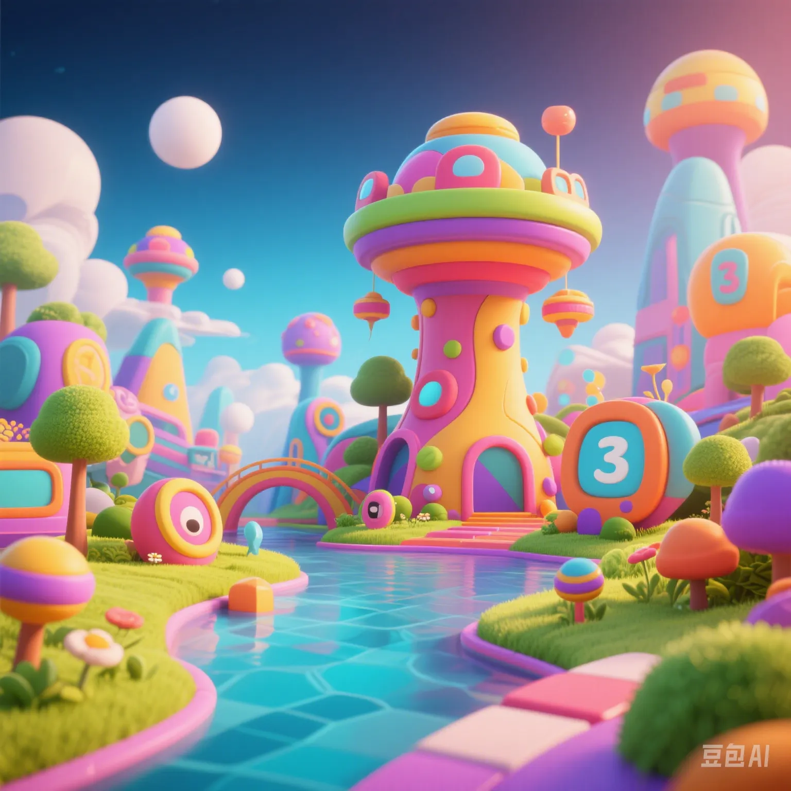

Has the Metaverse Cooled Down? A Full Analysis of 2025 Virtual World User Engagement Data
PeaceLove.Top Insights :2025-04-17
🧊 How Much Has the Metaverse Cooled Down?
From the "Year of the Metaverse" in 2021 when it became a global sensation to 2025, the number of active users has decreased by 32%. By examining the user data of five major virtual platforms (Meta Horizon, Roblox, Zepeto, The Sandbox, Decentraland), we've mapped out the "temperature map" of the metaverse.
🔍 Comparison of Core Engagement Data (2023 vs 2025)
| Platform | Daily Active Users (in 10,000) | Average User Online Time | Transaction Activity (NFTs/Month) | Event Publishing Frequency |
|---|---|---|---|---|
| Roblox | 5,800 → 4,900 | 42 minutes → 31 minutes | Approx. 1.2 million → Approx. 730,000 | Steady growth |
| Decentraland | 67 → 18 | 15 minutes → 5 minutes | Approx. 150,000 → Approx. 30,000 | Significant decline |
| The Sandbox | 73 → 40 | 25 minutes → 13 minutes | Approx. 200,000 → Approx. 90,000 | Irregular |
| Zepeto | 1,100 → 900 | 37 minutes → 28 minutes | Approx. 800,000 → Approx. 400,000 | Weakly stable |
| Meta Horizon | 300 → 220 | 60 minutes → 38 minutes | Not publicly disclosed | Decreased |
Roblox and Zepeto remain relatively stable, while The Sandbox and Decentraland have become representative of "cyber ghost towns."
🧑🤝🧑 Who's Still Socializing? Unveiling the User Profile!
🎮 Core Active Metaverse Users (2025)
| Age Group | Proportion | Keywords |
|---|---|---|
| 13 - 17 years old | 45% | Virtual avatars, social platforms, games |
| 18 - 24 years old | 31% | Creative economy, virtual jobs |
| 25 - 35 years old | 18% | Digital collectibles, investment attempts |
| Over 36 years old | 6% | Experience - seeking, curiosity |
Minors still form the main force, but their spending power is limited. The attrition rate of "virtual workers" has reached 62%.
💰 Has the Metaverse Economy Shrunk?
The once - popular "virtual land rush" in 2022 has now cooled down significantly.
| Indicator | 2022 | 2025 | Trend |
|---|---|---|---|
| Average price of virtual land (ETH) | 4.7 | 0.9 | ⬇️ - 80% |
| Average monthly NFT transactions | 2.1 million | 870,000 | ⬇️ - 58% |
| Metaverse enterprise occupancy rate | 63% | 29% | ⬇️ - 54% |
📉 Keyword Cloud of User Feedback
The top 10 keywords in the metaverse "cooling word cloud": "Boring", "Laggy", "Too few people", "VR headset is too heavy", "Average picture quality", "No one talks to me", "Want a refund", "Scammed by NFTs", "Virtual land is too expensive", "Like an empty shell".
☀️ Where Could a Rebound Happen?
Despite the obvious chill, there are signs of a rebound:
- Educational scenarios: The interactivity of virtual campuses and experimental simulations has increased, with a 6% growth in DAU.
- Virtual concerts: The global virtual concert hosted by Meta in 2025 attracted 12 million participants.
- Corporate offices: The usage rate of VR meeting tools has increased by 12%, especially among global remote - collaboration companies.
✨ Conclusion: The Metaverse Isn't 'Dead', It's 'Changed'
The metaverse is shifting from a "mass frenzy" to "niche sectors". The entertainment hype is fading, while functional scenarios are showing signs of promise. Don't rush to draw conclusions; the "cooling - off period" could be the eve of transformation.